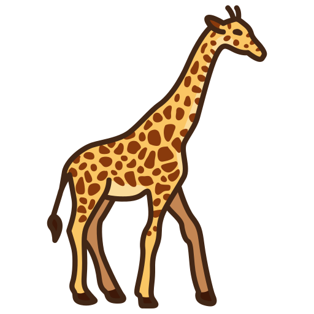
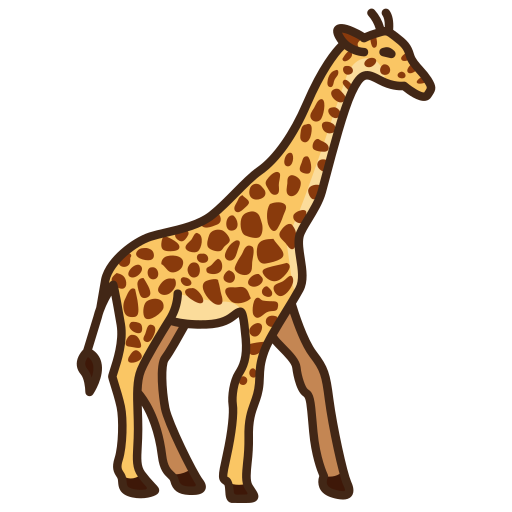
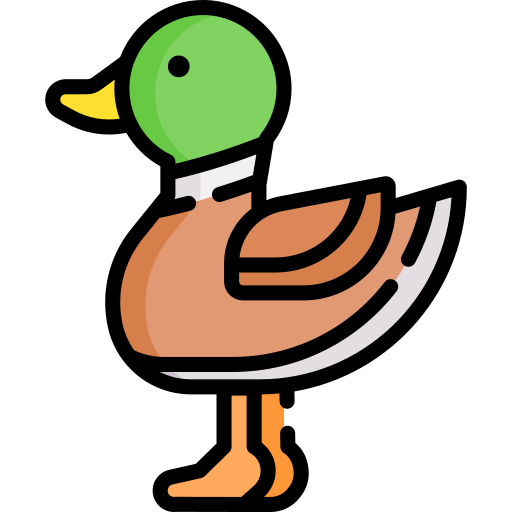
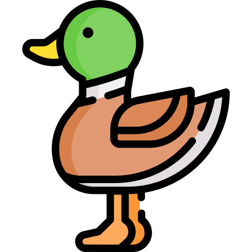

96 Different
Species of
Animals
And 70 Species of
Plants
 


The Biodiversity of Auto Safari Chapín
 

The species are distrivuted in several enclosures, each area adapted to the needs of those who inhabit it. The park has a total of 14 enclousures where most of the animals now live in larger areas instead of cages, being an approximate replica of their natural habitat, with the aim that the animals live more confortably and that, visitors can see them up close.